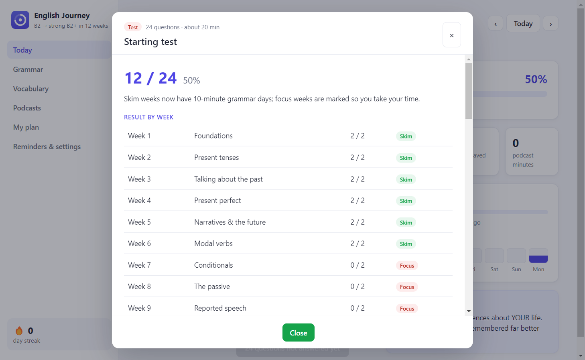
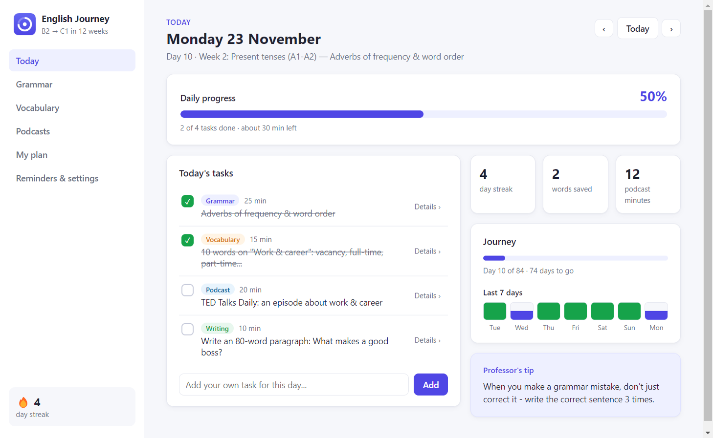
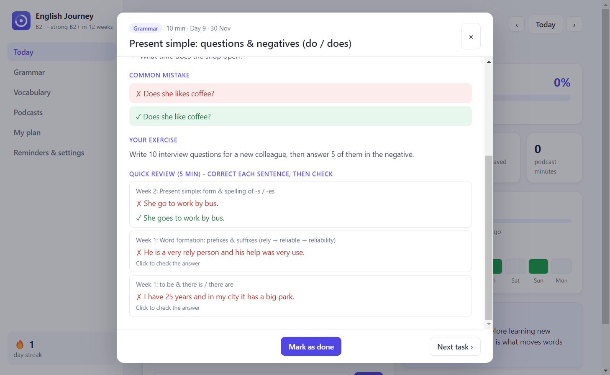
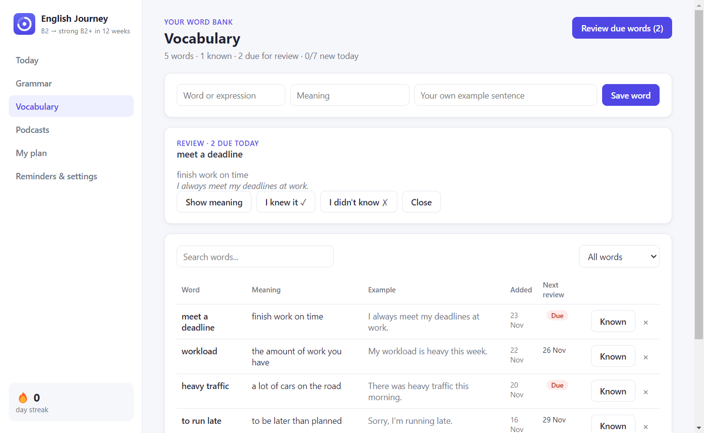
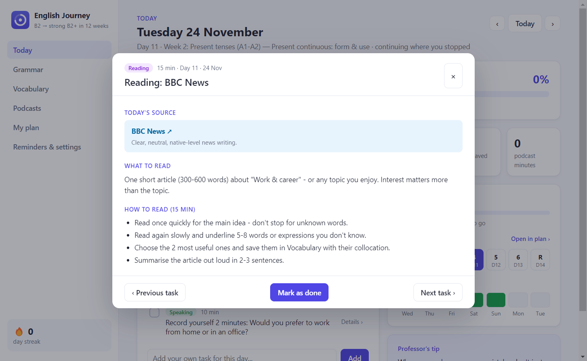
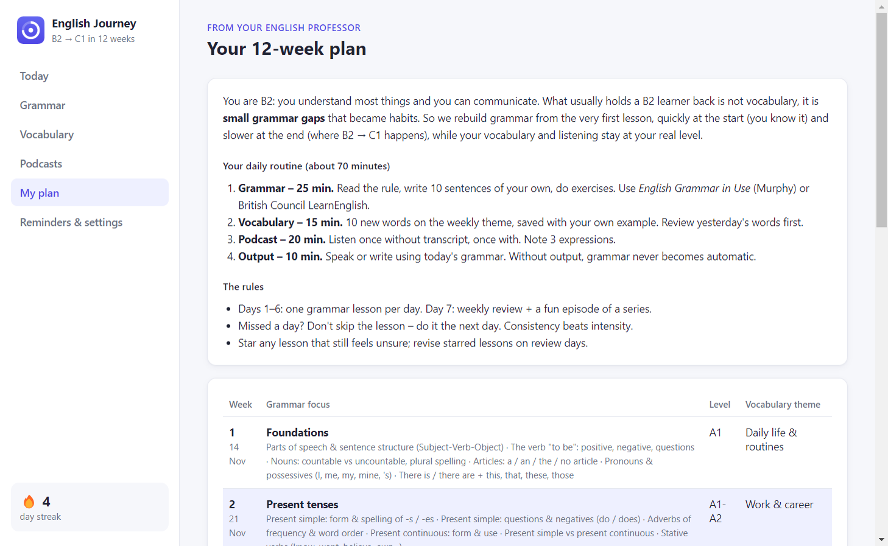
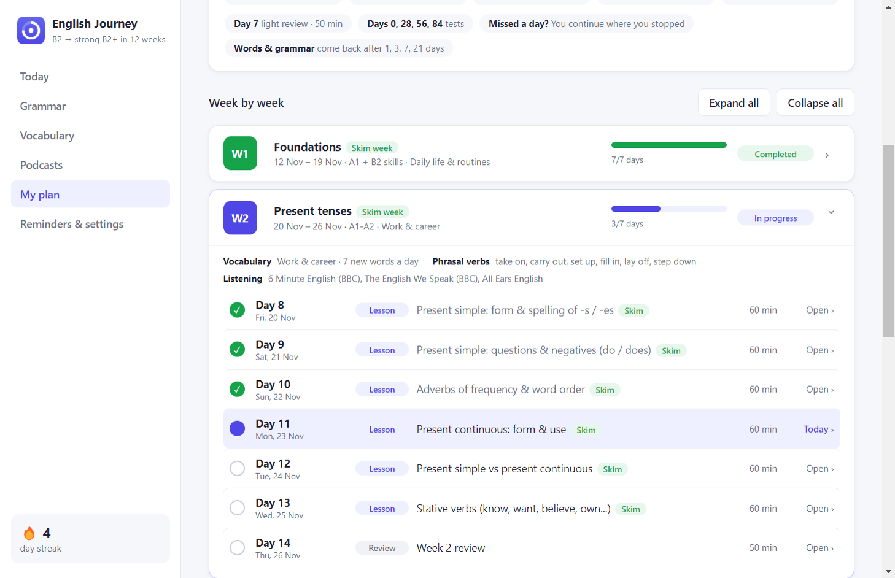
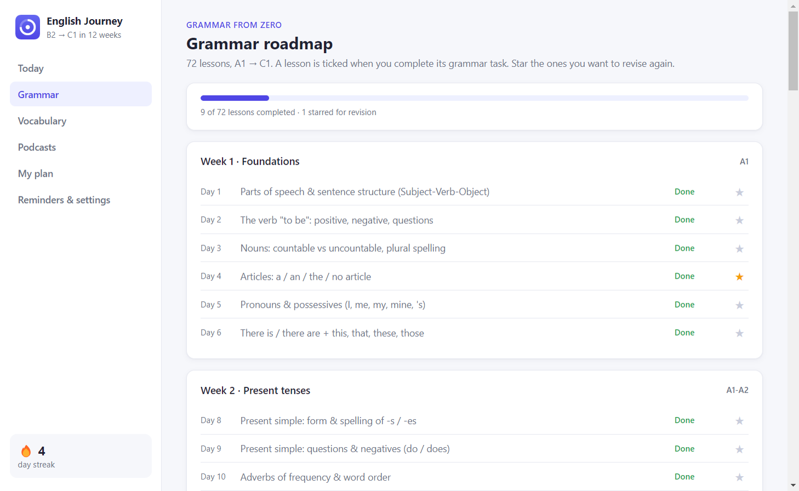
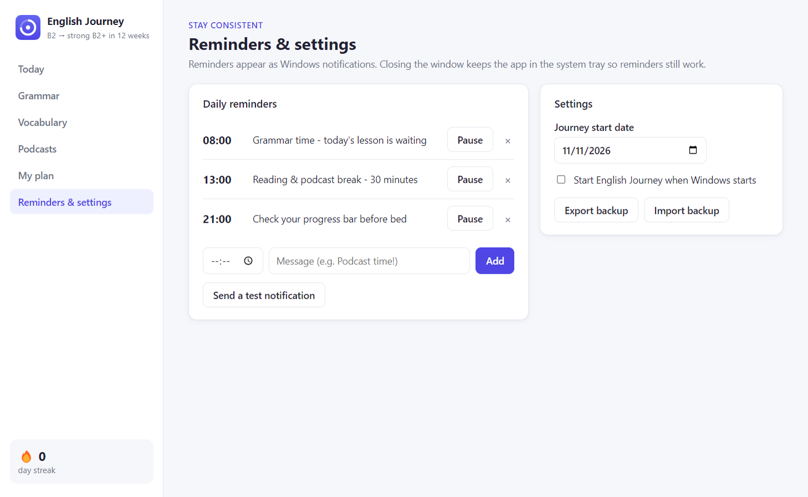

User guide · version 1.2
English Journey
How to use the app every day for your 12-week journey from B2 to a strong B2+.
85plan days (day 0 to day 84)
75minutes on a normal day
72grammar lessons, A1 → C1
4tests to measure progress
Contents
What's in this guide
- 1
Before you startOpen the app, set reminders, what you need
- 2
Your journey at a glanceThe 12 weeks, the tests, the daily time
- 3
Day 0: the starting testFind out what you already know
- 4
A normal day, step by stepGrammar, vocabulary, reading, podcast, speaking / writing
- 5
Review days and test daysDay 7 of each week, days 28, 56 and 84
- 6
Following your progressMy plan, Grammar and the "This week" strip
- 7
Busy days and missed daysWhat to do when life gets in the way
- 8
Reminders, settings and backupsNotifications, start with Windows, saving your data
- 9
The teacher's rules and your weekly checklist
- 10
Problems and questionsQuick answers
- 11
Quick reference cardOne page to keep next to you
How to read this guide. Read sections 1 to 4 before your first day (about 15 minutes). Keep the quick reference card (section 11) open or printed next to you. Come back to the other sections when you need them.
Section 1
Before you start
Five minutes of set-up now saves you time every day.
Open the app
- Open File Explorer and go to C:\Users\nourm\english-journey-tracker\release\win-unpacked.
- Double-click English Journey.exe. If Windows shows "Windows protected your PC", click More info → Run anyway (the app is not code-signed; this is normal for a personal app).
- Make a shortcut: right-click English Journey.exe → Send to → Desktop (create shortcut). From now on, open the app from your desktop.
Set it up once
- Click Reminders & settings in the sidebar.
- Tick Start English Journey when Windows starts. The app then opens by itself and your reminders always work.
- Check the 3 reminders (08:00 grammar, 13:00 reading & podcast, 21:00 progress check). Pause, delete or add reminders so they match your day. Click Send a test notification to see one.
- Leave Journey start date as it is (the day you started).
Closing the window does not quit the app. It goes to the system tray (the small icons next to the clock) so reminders can still appear. To really quit, right-click the tray icon → Quit. Only one copy of the app can run at a time, so if an old version is still in the tray, a new one will not open.
What you need
| Item | Why |
|---|
| A notebook (paper or digital) | For your grammar sentences and writing tasks |
| English Grammar in Use (Murphy) or britishcouncil.org LearnEnglish | Extra explanations and exercises for each grammar lesson |
| Cambridge or Oxford Learner's Dictionary (free online) | Meaning and pronunciation of new words |
| Your phone | Recording yourself on speaking days, podcasts on the go |
| Headphones | Podcasts and shadowing |
Section 2
Your journey at a glance
12 weeks, about 100 hours, from B2 to a strong B2+. You rebuild grammar from the very beginning while your vocabulary, reading and listening stay at your real level.
Day 0Starting test
Weeks 1–4Foundations, present, past, present perfect
Day 28Checkpoint 1
Weeks 5–8Narratives, modals, conditionals, passive
Day 56Checkpoint 2
Weeks 9–12Reported speech, clauses, linking, advanced
Day 84Final test
Every week has the same shape
| Days | Type | Time | What happens |
|---|
| Days 1–6 | Lesson | ≈ 75 min | One new grammar lesson + vocabulary + reading + podcast + speaking or writing |
| Day 7 | Review | ≈ 50 min | Light review of the week + a fun episode of a series in English |
A normal day: 5 tasks, in this order
1 Grammar25 min
(10 on skim weeks)
2 Vocabulary10 min
reviews + 7 new words
3 Reading15 min
one short article
4 Podcast15 min
one episode
5 Speak / write10 min
the day's question
Four ideas that make the plan work
- Test first, then skip what you know. The starting test turns weeks you already master into 10-minute "skim" weeks.
- Spaced repetition. Words and grammar come back after 1, 3, 7 and 21 days, just before you would forget them.
- Nothing is ever skipped. The plan moves to the next lesson only when you finish the current one.
- Small every day. 75 minutes a day is better than 5 hours on Sunday.
Honest goal. About 100 hours of work takes you to a strong B2+: accurate grammar, a larger vocabulary, comfortable reading and listening. C1 usually needs about 200 hours, so it is your next step after this plan.
Section 3
Day 0: the starting test
24 questions, about 20 minutes. It tells the app which weeks you can go through quickly.
- Open the Today page. You will see Day 0 · Starting test.
- Click the task Test Starting test: 24 questions, then Start the test.
- Answer every question. No dictionary, no guessing help — the result must show your real level.
- Click Submit answers. You see your score, your result for each week and every mistake with the right answer.
- Do the second task: read My plan and set your reminders (section 1). Your day 0 is done.

Example result: weeks 1–6 all right (Skim), weeks 7–12 all wrong (Focus).
| Your result for a week | What the app does |
|---|
| 2 / 2 → Skim week | The grammar task of that week becomes a 10-minute "Skim" task: read the rule and the common mistake, do the quick review, write 3 sentences, move on. |
| 1 / 2 → normal week | The normal 25-minute grammar lesson. |
| 0 / 2 → Focus week | The lesson is marked "Focus": take your time, do extra exercises, star the lesson if it still feels unsure. |
Section 4
A normal day, step by step
Open the app, go to Today, and work down the list from top to bottom.

The Today page: your tasks on the left; streak, journey, "This week" strip and the last 7 days on the right.
How the Today page works
- Click a task (its text) to open a window with exactly what to do today.
- Click the square box on the left to tick a task as done. Click it again to undo.
- The daily progress bar fills as you tick tasks and turns green at 100%.
- Your streak grows by 1 for every day you finish at 100%.
- You can add your own task at the bottom of the list (for example "Watch a TED talk").
Tip. In the task window, use Next task › (or the → key) to go through the whole day without closing the window, and Mark as done when you finish each task.
GrammarStep 1 · Grammar25 min (10 on skim weeks)
- Click the grammar task. Read The rule and the Examples (5 min).
- Look at the Common mistake: the red ✗ sentence is wrong, the green ✓ one is right. Say the right one out loud.
- Quick review: you see the wrong sentence from lessons of 1, 3, 7 and 21 days ago. Correct it in your head, then click to check (5 min).
- Do extra exercises in Murphy or on British Council LearnEnglish (10 min), then Your exercise in your notebook (5 min).
- Still unsure? Go to Grammar and click the ★ next to the lesson to star it for revision.

The grammar window: common mistake, your exercise and the quick review (click a card to see the answer).
VocabularyStep 2 · Vocabulary10 min
- Reviews first. Click Start review in the task window (or Review due words on the Vocabulary page).
- For each word: try to remember the meaning, click Show meaning, then answer honestly: I knew it ✓ or I didn't know ✗.
- New words. In the task window, choose 5 of the 10 theme words you don't know (skip the easy ones). Click a word: the Vocabulary form opens with it filled in.
- Look it up in the dictionary and save it with the meaning, its collocation ("meet a deadline", not just "deadline") and your own example sentence.
- Add 2 more words from today's reading or podcast, and the phrasal verb of the day (click it: meaning and example are filled in for you).

The Vocabulary page with the review card open. "Next review" shows when each word comes back.
| Your answer | When the word comes back |
|---|
| New word saved | Tomorrow |
| I knew it ✓ (1st, 2nd, 3rd time) | In 3 days → in 7 days → in 21 days |
| I knew it ✓ (4th time) | Marked as known — it won't come back |
| I didn't know ✗ | Tomorrow again (starts from the beginning) |
Automatic tick. The vocabulary task ticks itself when you have saved 7 new words today and no reviews are left.
ReadingStep 3 · Reading15 min
- Click the reading task and click the source link (it opens in your browser).
- Choose one short article (300–600 words), on the week's theme or any topic you like.
- Read once quickly for the main idea. Don't stop for unknown words.
- Read again slowly and underline 5–8 new words. Save the 2 most useful in Vocabulary.
- Summarise the article out loud in 2–3 sentences. Then tick the task.

PodcastStep 4 · Podcast15 min
- Click the podcast task and open the podcast link. Choose an episode about the week's theme (or any recent one).
- Listen once without the transcript (main idea), then once with it (details).
- Go to Podcasts, fill in the podcast name, episode, minutes and the expressions you heard, and click Save episode. The task ticks itself.
Podcasts get harder every 4 weeks: BBC and All Ears English at the start, Luke's English Podcast and TED Talks at the end.
Speaking / WritingStep 5 · Speak or write10 min
- Click the task: you see the question, the grammar to use and how to do it (sentences, a paragraph, an email, shadowing, a voice recording, or teaching the rule out loud).
- Answer the question using today's grammar and some of today's words.
- Once a week, show one text or recording to someone who can correct you: a teacher, a native-speaker friend, or an AI tool. Write down your mistakes.
Done! When all 5 tasks are ticked, the progress bar turns green, your streak grows, and tomorrow the app moves to the next lesson.
Section 5
Review days and test days
Review Day 7 of every week — about 50 minutes
| Task | Time | What to do |
|---|
| Grammar review | 15 min | Go through the common mistake of each of the week's 6 lessons (click to check), revise your starred lessons, write one paragraph using 3 grammar points. |
| Vocabulary review | 10 min | Do all your due word reviews. |
| Fun day | 25 min | Watch one episode of a series in English with English subtitles. Repeat 3 sentences you like and save 2 expressions. |
Test Days 28, 56 and 84
| Day | Test | Questions | After the test |
|---|
| 28 | Checkpoint 1 (weeks 1–4) | 16 | Every lesson you get wrong is starred automatically. Revise starred lessons on your next review days. |
| 56 | Checkpoint 2 (weeks 5–8) | 16 |
| 84 | Final test (all 12 weeks) | 24 | Compare your score with your starting test to see how far you have come. |
On test days you also do your vocabulary reviews. You can retake any test later from its task window, and see all your scores on the Grammar page and the My plan page.
Teacher's advice for tests. Do them in one sitting, with no dictionary and no notes. A low score is not a failure: it shows you exactly what to revise, and that is the most useful information you can get.
Section 6
Following your progress
My plan — the whole journey

Top of My plan: journey progress, the 4 tests and your daily flow.
- Journey progress: how many plan days you have done and your expected finish date.
- Milestones: the 4 tests with their dates and your scores. Click one to open that day.
- Week by week: one card per week (dates, level, theme, x/7 days, status). The current week is open; click a week to open or close it.

Inside a week: its phrasal verbs and podcasts, and its 7 days. ✓ = done, blue dot = today.
Plan and Today are linked. Click any day in My plan to open it on the Today page with all its tasks. On the Today page, the This week strip shows the 7 days of your week (R = review day, T = test day): click a tile to see that day, or Open in plan › to jump to the week.
Grammar — your lessons and test results
- Your 4 test scores at the top.
- All 72 lessons by week, with Done / Today, and Skim / Focus labels from your starting test.
- The ★ star: click it to mark a lesson you want to revise. Be honest — honest stars mean fast progress.

Section 7
Busy days and missed days
You missed a day
Nothing is lost. The plan only moves forward when you finish a lesson, so the next time you open the app, it continues exactly where you stopped. The header says "continuing where you stopped". Your expected finish date simply moves one day later.
- Do not try to do two days in one day. Just do today's tasks.
- Your words that were due will wait for you: do your reviews first.
- Your streak restarts, but your progress does not. Start a new streak today.
You only have 20 minutes
Do the minimum day. It keeps the habit alive:
- Vocabulary reviews (5 min) — so words don't pile up.
- The grammar lesson, short version: rule, examples, common mistake, quick review (10–15 min). Tick it — this moves the plan forward.
- Leave the other tasks unticked. That's OK.
You want to look at another day
Use the ‹ and › arrows at the top of the Today page, a tile in the This week strip, or a day in My plan. Click Today to come back.
Ticked something by mistake? Click the tick box again to undo it. If it was the grammar task of a past day, your current plan day may change — undo it and it goes back.
Section 8
Reminders, settings and backups

| Setting | How to use it |
|---|
| Daily reminders | Windows notifications at the times you choose. Add one with the time + message → Add. Pause turns one off without deleting it. Reminders tell you how many tasks are left. |
| Start with Windows | Tick it so the app (and your reminders) start by themselves every day. |
| Journey start date | The day your journey began. You normally never change it. |
| Export backup | Saves all your data (words, progress, tests) in one .json file. Do it every Sunday and keep the file in OneDrive or on a USB stick. |
| Import backup | Loads a backup file, for example on a new computer. It replaces the current data. |
Your data stays on your computer. There is no account and nothing is sent to the internet. That is why the weekly backup matters.
Section 9
The teacher's rules
- Consistency beats intensity. 10 minutes on a bad day is better than nothing.
- Review before new. Word reviews and the grammar quick review always come first.
- Learn words with their partners. "make a decision", "heavy traffic", "meet a deadline".
- Make it personal. Write examples about your own life — you remember them much better.
- Say it out loud. Grammar you can say quickly is grammar you really own.
- Be honest with tests, stars and "I didn't know". Honesty is what makes the plan adapt to you.
- Get feedback once a week on your speaking or writing.
Your weekly checklist
Print this page or copy it into your notebook. Tick each item at the end of the week (day 7).
- I finished the 6 lessons of the week (or I know which one I'm on).
- I did my word reviews every day — nothing is overdue.
- I saved about 40 new words, each with a collocation and my own example.
- I read 6 articles and listened to 6 podcast episodes.
- I got feedback on one text or recording, and wrote down my mistakes.
- I revised my starred lessons on day 7.
- I watched one episode of a series with English subtitles.
- I exported a backup.
Section 10
Problems and questions
| Problem / question | Answer |
|---|
| I open the app but I see an old version, or nothing happens. | An older copy is still running in the tray. Right-click the English Journey icon near the clock → Quit, then open the app again from release\win-unpacked. |
| The app takes a long time to open. | Use release\win-unpacked\English Journey.exe (opens fast), not the single-file English Journey 1.2.0.exe (unpacks itself first). |
| My reminders don't appear. | The app must be running (in the tray is fine). Check that the reminder is not paused, and that Windows "Do not disturb" / Focus is off. Use Send a test notification. |
| The vocabulary task doesn't tick itself. | It needs 7 new words saved today and no due reviews. Do your reviews, or tick it yourself. |
| The podcast task doesn't tick itself. | Save the episode on the Podcasts page on the same day. Or tick it yourself. |
| All the theme words are too easy. | Take your 7 words from your reading and podcast instead. The list is a help, not an obligation. |
| A skim week feels too fast. | Do the full lesson anyway and star it. The skim label is a suggestion based on 2 questions. |
| I want to use the app on another computer. | Export a backup, copy the release\win-unpacked folder and the backup file, then Import backup on the new computer. |
| I finished day 84. What now? | Compare your final test with your starting test. The app starts a second round: use it for revision at a faster pace, or move on to C1 material (for example Advanced Grammar in Use). |
Section 11
Quick reference card
Every day (about 75 minutes)
| # | Task | Time | In the app |
|---|
| 1 | Grammar | 25 min | Click task → rule, examples, common mistake, quick review, exercise → Mark as done |
| 2 | Vocabulary | 10 min | Start review → then 5 theme words + 2 own words + phrasal verb → Save word (ticks itself at 7) |
| 3 | Reading | 15 min | Click task → open source → read twice → save 2 words → tick |
| 4 | Podcast | 15 min | Listen twice → Podcasts page → Save episode (ticks itself) |
| 5 | Speak / write | 10 min | Click task → answer the question with today's grammar → tick |
Special days
- Day 0 starting test (skim / focus weeks)
- Day 7 of each week: light review, 50 min
- Days 28 & 56 checkpoints, day 84 final test
Spaced repetition
Words and grammar come back after 1 → 3 → 7 → 21 days.
Useful clicks
- Task text → details window
- Tick box → done / undo
- ‹ › → other days · Today → back
- Word chip → fills the Vocabulary form
- ★ on Grammar → revise later
- Day in My plan → opens it on Today
- Tray icon → Quit
Missed a day? Nothing is skipped — just open the app and continue. Busy? Reviews + a short grammar lesson = 20 minutes.